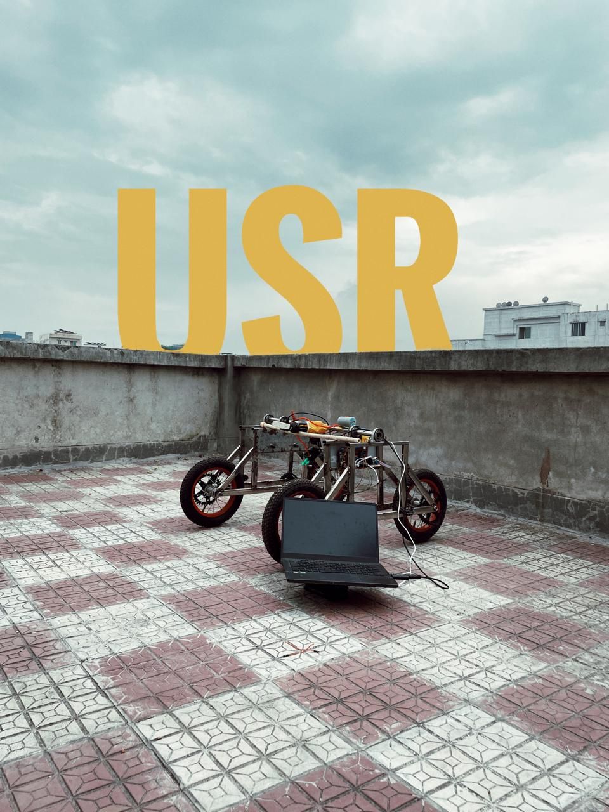

01 FEATURED PROJECT
Autonomous Chemical Spraying Robot
A real-time perception and control system for precision agriculture, identifying weeds and crops and triggering targeted spraying on edge hardware.
Computer vision · Robotics · YOLOv8-Nano · 42 ms · 0.92 mAP@50
View repository